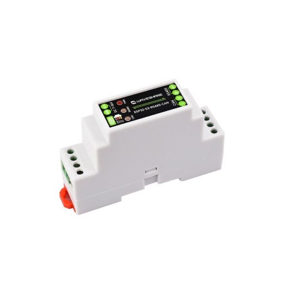
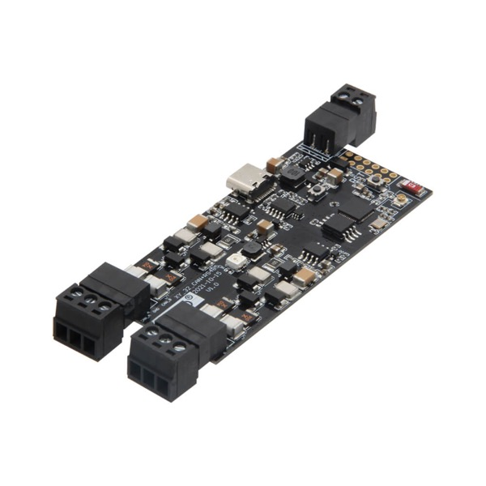
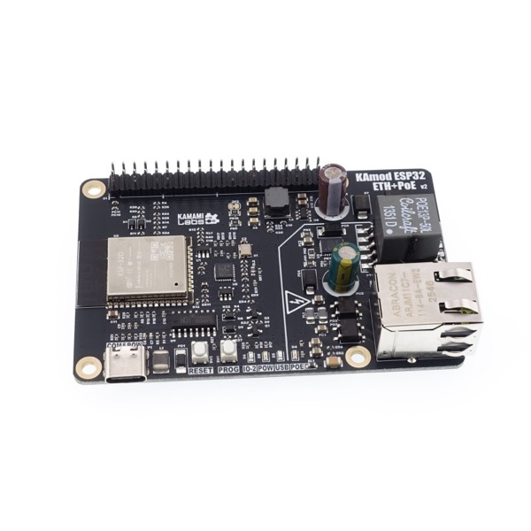

GbbOptimizer ↔ Modbus RTU proxy for off-the-shelf ESP32 RS485 boards
Pick your board, connect it over USB and click Install to flash the latest firmware straight from your browser (Chrome or Edge required).

ESP32-S3 · WiFi · BLE provisioning · isolated RS485

ESP32 · WiFi · auto-direction RS485

ESP32 · Ethernet + PoE (no WiFi) · KAmodRPi UART RS485 ISO HAT (isolated, auto-direction)
Flash over USB with the RS485 HAT removed — the USB converter and the HAT share the same UART pins.
WiFi boards (Waveshare, LilyGo):
Kamami (Ethernet-only): unplug USB, mount the RS485 HAT,
plug in Ethernet (PoE or 5 V) — the device gets an address via
DHCP; open http://gbbdongle-kamami.local or its IP address
from your router.
Then, on the device's web page: